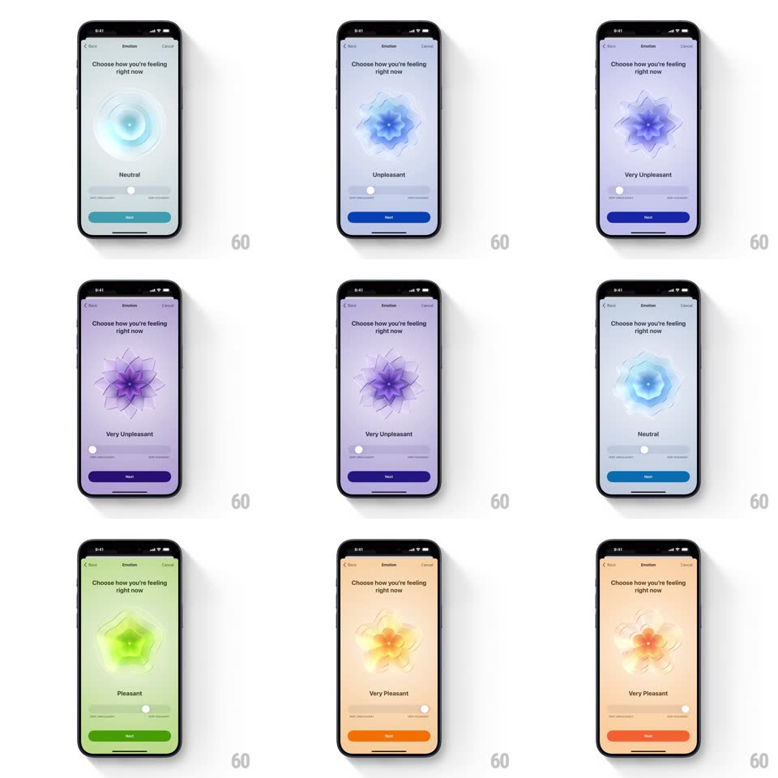

Media
Frame-by-frame

Rebuild this interaction 1:1: Apple Health's emotion slider - scrubbing morphs a layered organic shape through geometries and colors while the whole background gradient follows the feeling.

Rebuild this interaction 1:1: Apple Health's emotion slider - scrubbing morphs a layered organic shape through geometries and colors while the whole background gradient follows the feeling. ## Integration Integration: stack-agnostic spec - springs given as stiffness/damping, timed motions as duration + curve; map every value to your framework and animation library of choice. ## Scene "Choose how you're feeling right now" screen. Center: a large layered translucent shape - smooth concentric rings at Neutral, a spiky crystalline star at Very Unpleasant, a soft petaled flower at Very Pleasant. Below: the emotion label, a slider with end captions, and a Next button. The background is a full-screen gradient tinted to the current emotion. ## Motion spec Pattern: continuous morph drive by a single scrub value. - Drag the slider thumb (1:1): the shape morphs continuously - petal count, spikiness, and rotation interpolate between keyframe geometries (Neutral rings, Slightly/Unpleasant stars, Pleasant flowers) with no snapping; the shape also rotates slowly with scrub (+-30 degrees end to end). - Color is a full-scene interpolation: shape hue, background gradient, label color, and Next button all slide through the same palette (teal Neutral, blue Slightly Unpleasant, purple Very Unpleasant, green Slightly Pleasant, yellow Pleasant, orange/red Very Pleasant) over the exact scrub position. - The shape breathes at idle: layers scale +-3% in counter-phase (5s loop), and it keeps breathing while scrubbing. - The emotion label rolls to the new word at each band boundary (vertical roll 200ms, ease-out). - Release: the thumb settles anywhere (continuous, no detents) and the shape eases to rest (spring ~200/24) at the chosen blend. ## Calibration - The morph is a single continuous parameter - position 0.37 is a real, stable in-between shape, not a transition midpoint. - Background gradient is radial, centered on the shape, and always matches it exactly. ## Reduced motion Shape crossfades between the 6 keyframe states; colors crossfade. ## Don't miss - Layer translucency (multiply/screen blends between petals) is what makes it feel glassy-organic - flat fills go muddy. - Unpleasant shapes are sharp and cool; pleasant are round and warm - never invert the mapping.